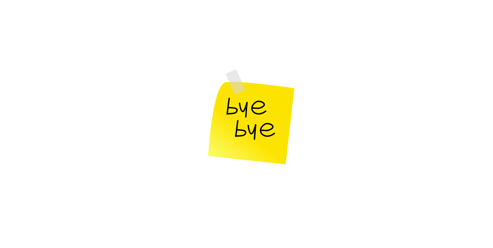
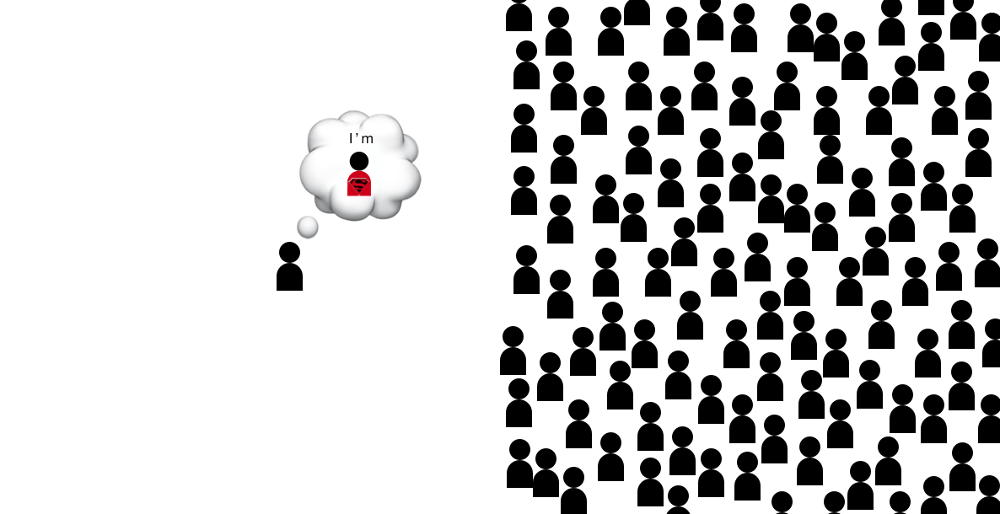
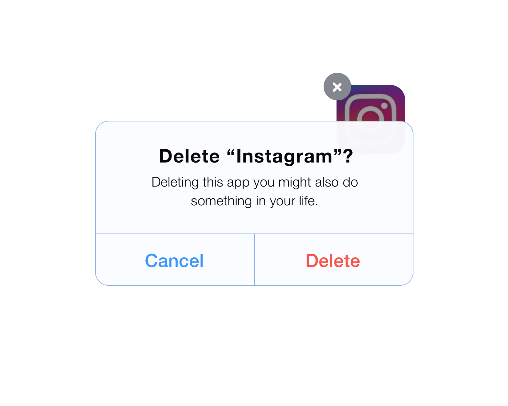

<!DOCTYPE html>
<!--[if lt IE 7]>
<html class="no-js lt-ie9 lt-ie8 lt-ie7">
<![endif]-->
<!--[if IE 7]>
<html class="no-js lt-ie9 lt-ie8">
<![endif]-->
<!--[if IE 8]>
<html class="no-js lt-ie9">
<![endif]-->
<!--[if gt IE 8]><!-->
<html class="no-js">
<!--<![endif]-->
    <head>
	<meta charset="utf-8">
	
	<meta http-equiv="X-UA-Compatible" content="IE=edge,chrome=1">
	
	<title>I Quit Social Media</title>
	
	<meta name="description" content="Why I deleted all of my Social Media">
	
	<meta name="viewport" content="width=device-width, initial-scale=1">

    <!-- Place favicon.ico and apple-touch-icon.png in the root directory -->

	<link rel='stylesheet' href='css/blogpost.css'>
	
	<link rel='stylesheet' href='../css/normalize.min.css'>
	<link rel='stylesheet' href='../css/bootstrap-theme.css'>
	
	<link rel='stylesheet' href='../css/bootstrap.min.css'>
	<script src='../js/vendor/modernizr-2.6.2.min.js'></script>
    </head>
<body>
<progress value="0"></progress>
	<div class="container">
		
		<h1>I Quit Social Media</h1>
		<p class="date">12 December 2016</p>
		<p>In Western countries we grow up with everyone telling us how smart and special we are. Everyone is special.</p>
		
		<p>When it comes to studying our parents tell us to find “our way” through life and do what we feel we’re good at.</p>
		
		<p>The only thing that people have repeated me is: 
		<blockquote> “Normally it takes 2 months to do x, but you can do it in one week.”</blockquote></p>
		
		<p>In my third year of high school summer vacation I decided to go to France to get fluent at speaking. I lived for a month in Lyon with a great family to get my ideas clear about my future. My host mother was a recruiter. On the side she helped depressed middle aged guys get a new job and life. As I was really interested in her job she offered me to teach me french doing attitudinal tests she did in her consulting job and interviews and tests she did recruiting. 
		
		<p>And you know what she told me after a month of testing?
		I’m a flexible enterprising person, good at everything that interests me.</p>
		
		<p>I hated this. I just wanted someone to tell me something like:</p>
		
		<p><blockquote>“You’re a runner. Go and run" </blockquote></p>
		
		<p>Instead all I got was:</p>
		
		<p><blockquote> “You’re so smart, you could get the best grades at everything if you only applied yourself more.” </blockquote></p>
		
		<p><strong>No one ever told me I had to work hard.</strong></p>
		
		<p>I was always told that I had to do was to work a little. To get what the others have to work hard for.</p>
		
		<p>For this reason I have always been looking to shock myself.</p>
		
		<p>I want to feel destroyed. To be shocked. To fail.</p>
		
		<p>To grow through traumas.</p>
		
		<p>I believe that nowadays growing up it’s hard to develop discipline if when you screw up all they tell you is “don’t worry". </p>
		
		<p>I need failures that have no way back.</p>
		
		<p>I decided to study engineering not because I liked it, but because it was the most difficult subject I knew about.</p>
		
		<p>For this reason last year before starting university I decided to delete my Facebook profile and to give up on every entrepreneurial project. Engineering would take 100% of my efforts.</p>
		
		<p>After two months I took what they call partial exams and aced them without dedicating myself 100%. In fact in those two months I had read a couple of non-fiction books and took a graphic designer course, managing to sell one of my first logos.</p>
		
		<p>So guess what happened next.. 
		I thought: 
		<blockquote>This thing is easy I can restart doing whatever I want.</blockquote></p>
		
		<p>So I stopped studying for university and started another blog, I learned html, css and got pretty fluent in coding in javascript. I also completed a Spanish course.</p>
		
		<p>I wrote a post every couple of days (700 words each at least) and started studying SEO and marketing techniques to get more traffic. I created a chat-bot management system in C for telegram’s new APIs and got thousands of views through it on my blog as my bot had great visibility on the Italian “bot-store”.</p>
		
		<p>After hearing about my telegram bot a friend of mine showed me his Instagram automation system and we started working together on his business to manage Italian SMBs online presence.
		<a href="https://blackmount.it/crescere-su-instagram/"><strong>BTW: Want to become and influencer?</strong> </a></p>
		
		<p>In February working on multiple projects at the same time I still managed to finish all my exams two weeks early.</p>
		
		<p>That was my downfall. I went to visit my aunt in Florida for two weeks taking a break from everything and started reading.</p>
		
		<p>I felt invincible. Engineering felt like a joke.</p>
		
		<p>Once back in Milan I spent the next two months only focusing on my projects and reading books.
		Then on the partial exams I failed the first two and heavily injured my right shoulder arm on the day before of the only exam I had prepared well. </p>
		
		<p>I spent the next to months mostly reading in bed. I felt lost and read something like 40 books on my kindle in this period. I tried going to class but couldn't write so it felt useless.</p>
		
		<p>Then I started rehabilitation for my shoulder and studying Chinese as I had just got a scholarship to study my second year in China.</p>
		
		<p>In June I restarted living. I went back to the gym, started studying to pass my exams and writing 250 words a day to become an author.</p>
		
		<p>It was going to be like always, I screw up and fix everything right away. </p>
		
		<h3>But it didn’t happen. I failed.</h3>
		
		<p>Finally I got hit by something. And now I'm almost happy about this.</p>
		
		<p>At the moment I’m attending one of China’s “elite” universities. My classmates on average are the best 0.25-0.5% students in the country.</p>
		
		<p>They have a point of view of the world totally new to me. 
		They’ve been brought up thinking they’re average and that they’re not special until they prove the opposite. 
		No one thinks they’re a special snowflake, no one thinks they’re smarter than the “system”.</p>
		
		
				
		<p>I forced myself to say no to all the new ideas that came through my mind and archived them.
		But I still feel I can do better if once again I cut out social media from my life.</p>
		
		<p>The idea of using a service designed to fragment my attention sounds like shooting myself.</p>
		
		<p><strong>In this world what is rare is what is valuable.</strong></p>
		
		<p><strong>Focusing deeply is extremely rare</strong>. </p>
		
		<p>Consuming the same informations everyone else doesn’t give a competitive edge.</p>
		
		<p>What gives competitive edge is doing stuff that is too “hard” or boring for everyone else to do. 
		Not knowing the latest news.</p>
		
		<p>Reading blogs and articles is a great waste of time. </p>
		
		<p>Also most books are, novels and stories are the TV series of the past. </p>
		
		<p>Non-fiction books are mostly bullshit.</p>
		
		<p><strong>I'm learning to love textbooks.</strong></p>
		<p>Reading a textbook you are exposed to the things that you don’t know proved using the scientific method. (hopefully)</p>
		
		<p>You get to understand the world. How it works. Knowing the reasons about everything in your daily life. This is my ultimate goal. I want everything to start to make sense. Because in my opinion our lives are easy compared to the complexity of theoretical problems we’ve solved. </p>
		
		<p>So if you can win at these hard things you can also win at life.</p>
		
		<p>My problem is that I tend to do what is most rewarding in the short term.</p>
		
		<p>If I’m in front of a computer and want to have fun I watch a TV series. 
		I stopped this in high school and read an episode by episode summary on wikipedia if any interest for a series strikes back. This way I know the stories. And there is no reason to watch them anymore.</p>
		
		<p>Then I started scrolling endlessly my social media feeds. Posting dumb things that came to my mind to get many like$. It’s fun, but not a productive way to spend time. So I deactivated my news feed and started blogging.</p>
		
		<p>Then I started spending hours listening to unknown artists and reading articles thinking it was harmless until I started my studies.</p>
		
		<p>All these activities are obviously more "fun" than reading a textbook. But in my experience we can artificially redefine what is fun. </p>
		
		<p>To redefine our "fun" standards we have to eliminate what is more stimulating and rewarding than what we want to be doing.</p>
		
		<p>For this reason I'm saying goodbye to all the social media I have left.</p>
		
		
		
		
		
		<hr>
		
		<footer>
			<p>This page is over, go back <a href="../index.html">home</a></p>
		</footer>
	</div> <!-- /container -->
    
    <script src="//ajax.googleapis.com/ajax/libs/jquery/1.11.0/jquery.min.js"></script>
        <script>window.jQuery || document.write('<script src="js/vendor/jquery-1.11.0.min.js"><\/script>')</script>
	
			<script src='../js/vendor/bootstrap-3.1.1.min.js'></script>
	<script src='js/progress.js'></script>
    </body>
</html>
